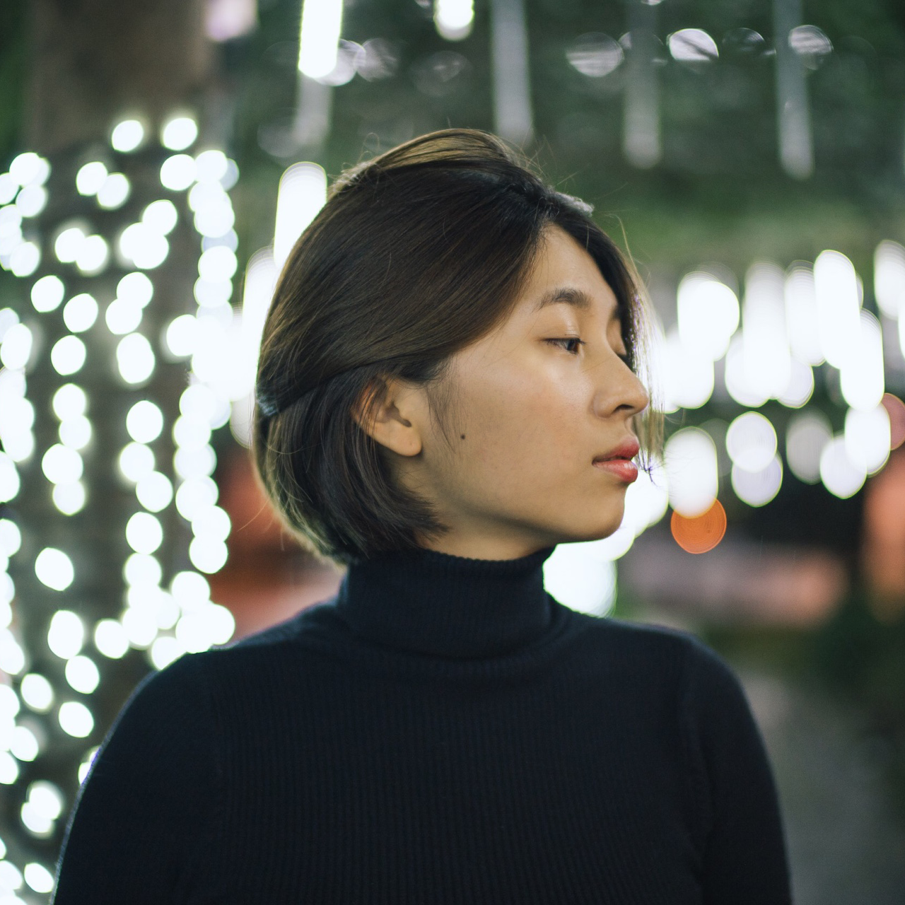

沈聿柔 1997.01.20 不知不覺要邁入23歲的埔里囝仔。 個性超級古怪彆扭。
來到台北讀書，有種從井底出來看世界的感覺， 每個禮拜都有看不完的展覽和講座， 滿滿的設計能量，讓我對設計越陷越深。 越是挖掘，越是看見自己的不足。關於設計不懂的還很多， 我還在路上，且不打算停留。

SKILLS AI/PS/ID/AE/PR DW/Xd/Sketch HTML/CSS/JS LANGUAGES Chinese-Proficient/ English/ 日本ご-Beginner/ Español-Beginner/ keep learning… HOBBYＳ Calligraphy Reading Moive